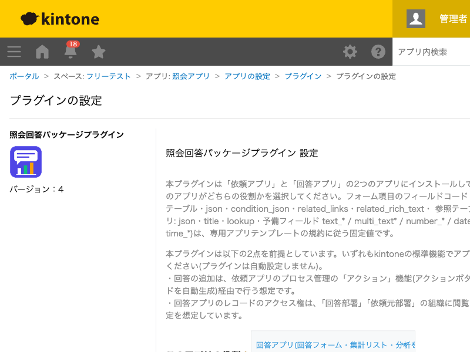
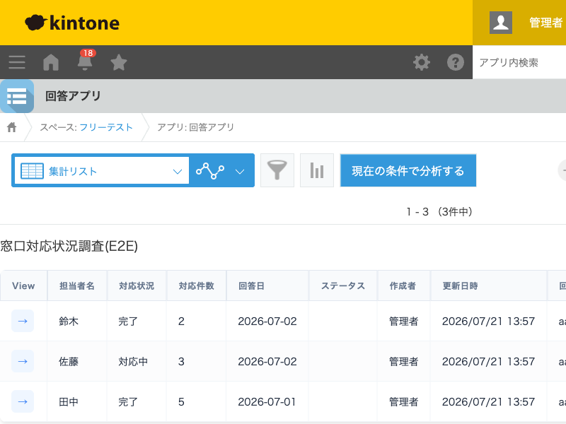
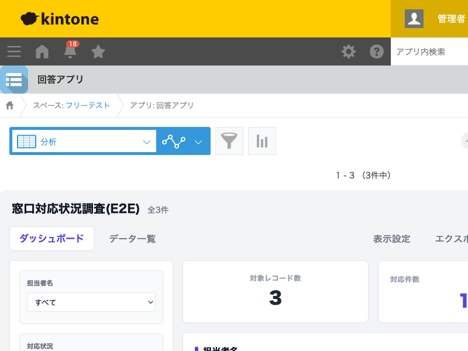

GovAppsプラグイン 安全性を確認できる無料kintoneプラグイン集
自治体などで頻発する部署間の「照会(調査依頼)」と「回答」の業務を、「依頼アプリ」「回答アプリ」の わずか2つのアプリだけで実現するノーコードパッケージプラグインです。依頼アプリで質問項目・表示幅・ 必須/任意をテーブルで設計すると、回答アプリ側にその内容に応じた仮想フォーム・集計リスト・分析 ダッシュボードが自動生成されます。照会のたびに使い捨てのアプリを作ってしまう「アプリの野良化」や kintoneのアプリ数上限への到達を防ぎます。
依頼アプリのレコードとして、質問項目(文字列・数値・日付・日時・時刻・ラジオボタン・ドロップダウン・チェックボックス)と詳細説明・表示幅・必須/任意をテーブルで設計するだけで、回答アプリ側に専用アプリがあるかのようなフォームが動的に生成されます。照会のたびに新しいアプリを作成する必要がありません。依頼アプリの追加・編集画面にもプレビューが表示されるため、保存前に質問項目を組み立てながらその場で見た目を確認できます。
回答アプリの一覧画面には、依頼された照会ごとに必要な列だけを動的に抽出して表示する「集計リスト」が描画されます。回答状況(未着手/対応中/回答済)や回答部署で絞り込みながら、期限管理・催促に活用できます。
依頼アプリのレコード詳細から「集計・分析」ボタン(レコードの編集権限があるユーザーにのみ表示)を押すと、回答アプリの分析ビューへその照会の回答に絞り込んで遷移します。横棒・縦棒・ドーナツ・折れ線グラフやKPI(合計/平均切替)、CSV/JSON/PDF出力で回答結果を可視化できます。
依頼アプリの「依頼元部署」、回答アプリの「依頼元部署(自動コピー)」「回答部署」は必須項目です。回答アプリの「フォーム定義JSON」フィールドは、保存時に自動生成される内部データのためレコード画面には表示されません。
本プラグインは、依頼アプリ・回答アプリ双方に固定のフィールドコード(予備フィールドを含む)を前提に 動作します。「必要な項目・一覧を自動作成」で作られたフィールド・一覧まわりを扱う際の注意点です。
json・condition_json・related_rich_textなど内部用フィールドに、フィールドのアクセス権で「編集不可」「管理者以外は閲覧不可」を設定すること。title/description/requester/recipients/deadline/attachment/questions/condition_json/json/related_links/related_rich_text/related、回答アプリ: title/description/requester/deadline/json/answer_department/answer_status/attachment/lookup/予備フィールドtext_*等)のフィールドタイプ変更・削除・コードのリネームをすること。JavaScriptカスタマイズがこれらのコードを直接参照しているため、動作しなくなります。text_1〜text_30等)を、質問項目テーブル経由ではなく直接編集して別用途に転用すること。依頼アプリ側の質問項目テーブルのinsert_column(タイプ+番号から自動計算)が動的にこれらを割り当てるため、直接値を入れると仮想フォームの表示内容と食い違います。json・condition_json・related_rich_textの値を手動で書き換えること。いずれも保存時にプラグインが自動生成する値で、手で編集すると仮想フォーム・関連リンクの描画が壊れます。previewSpaceId)・回答フォーム用スペース(formSpaceId)の要素IDを、プラグイン設定と食い違う値に変更すること。仮想フォームが描画されなくなります。<div id="virtual-table-div"></div>)を変更すること。集計リストが描画されなくなります。field_type(タイプ)・column_number(番号)を変更すること。insert_column(格納フィールドコード)が計算し直され、既存の回答データと新しいフォーム定義の対応がずれます(質問の追加は可能ですが、既存行の変更・削除は避けてください)。column_numberを1件の照会に設定すること。計算結果のフィールドコードが存在せず、依頼アプリの保存時にエラーになります。運用を始めるとよく課題になる点への対応例です。特に1点目は、回答済みデータの改ざん・誤操作を防ぐうえで強く推奨します。
answer_status)が 回答済」を追加し、回答部署の編集権限を外して閲覧のみにします。回答状況はプラグイン固定の通常フィールド(ラジオボタン)なので、標準のレコードのアクセス権の「フィールドの値」条件でそのまま指定できます。lookupの選択漏れや、依頼内容(タイトル・期限等)の転記漏れが起きやすくなります。questions)のcolumn_number(格納先の番号)は、自動作成される予備フィールドの残数(文字列30/複数行30/数値10/日付10/日時10/時刻5)を意識して設計し、一度回答が始まったらfield_type・column_numberを変更しない。insert_column(格納フィールドコード)はこの2項目から自動計算される文字列フィールドのため、選択肢を後から減らす場合も既存回答の値が選択肢から外れて表示が崩れないか確認してください。json/condition_json/related_rich_text)は、フィールドのアクセス権で管理者以外を閲覧不可にする。通常ユーザーの目に触れないようにし、誤って値を書き換えられる事故を防げます。kintoneセキュアコーディングガイドラインに沿って実装時にチェックしています。特に重要な点は次のとおりです。
textContent・createTextNode・new Option()経由で挿入しており、innerHTMLに変数を埋め込む箇所はありません。http(s)スキームのみ許可し、URL・表示ラベルともHTMLエスケープ、rel="noopener noreferrer"を付与しています(旧カスタマイズにあった未エスケープのHTML連結は廃止し、ユニットテストで担保)。kintone.api()(kintone自身への呼び出し専用の内部ラッパー)経由で、生のfetch/XMLHttpRequestでURLを直接組み立てる箇所はありません。kintone.plugin.app.setConfig())に保存するのは役割・アプリID・スペース要素ID・一覧名のみで、認証情報は一切扱いません。詳細な確認項目・確認日は下記GitHubのチェックリストに全項目を掲載しています。
設定画面(役割の選択と必要な項目・一覧の自動作成)、回答アプリの集計リスト(仮想一覧)、分析ダッシュボードの3画面です。



設定画面の「必要な項目・一覧を自動作成」ボタンを押すたびに、動作テスト環境のフィールド取得・追加
(preview系API)を実行します(ボタンを押した回数だけ実行され、自動では実行されません)。依頼アプリの
レコード保存時に、質問項目の格納先フィールドコードが回答アプリに実在するかを確認するため、回答アプリの
フィールド一覧を1回取得します。回答アプリの「集計リスト」「分析」一覧を開くたびに、一覧の絞り込み条件を
引き継いだカーソルAPI(records/cursor、500件/回)で該当レコードを全件取得します。